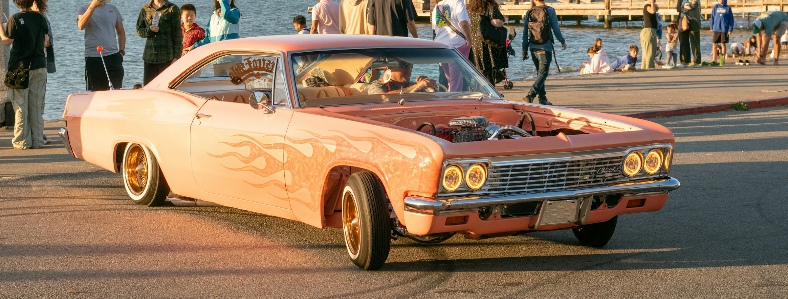

"I always thought of this car as American Muscle incarnate, and when restoring this beauty with a new v8 engine, spotless interior trim and an exhaust note that speaks for itself, I just couldn't hold back but to wrap it in our iconic orange flames. Subtlety was never an option." -John O'Riley